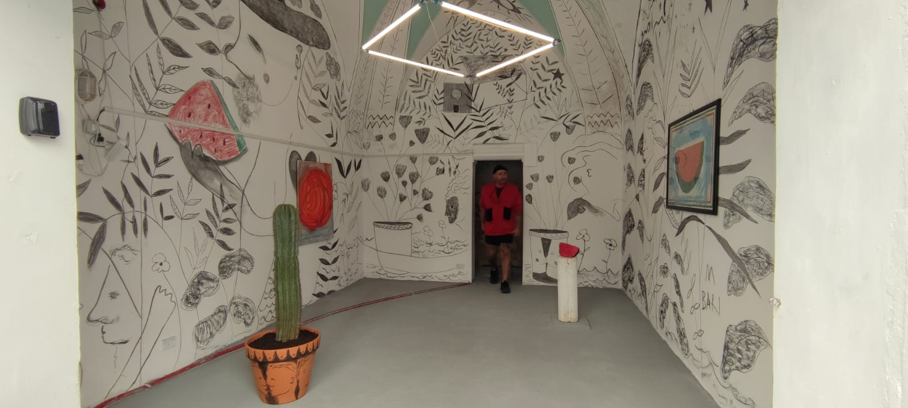

Evento concluso / Past event
San Cataldo andata e (forse) ritorno
04.10.2025 — 04.11.2025
Un percorso visivo dedicato alla memoria dei luoghi, al ritorno possibile e alla forza silenziosa del paesaggio mediterraneo.
A visual journey dedicated to the memory of places, the possibility of return, and the quiet strength of the Mediterranean landscape.
Approfondisci / Discover more